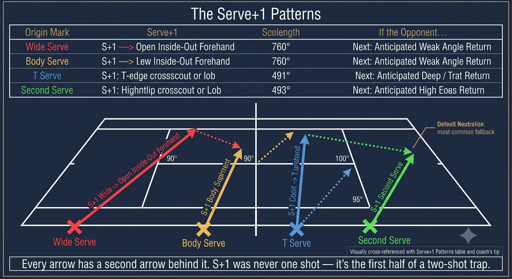
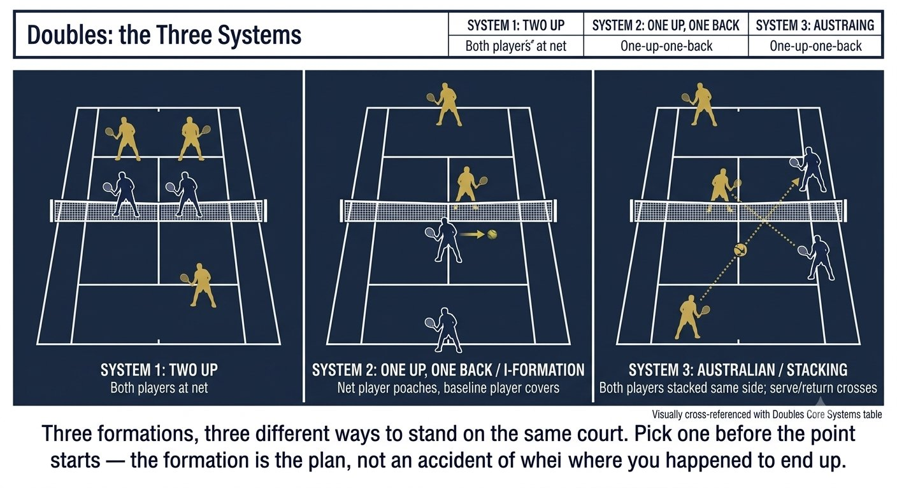
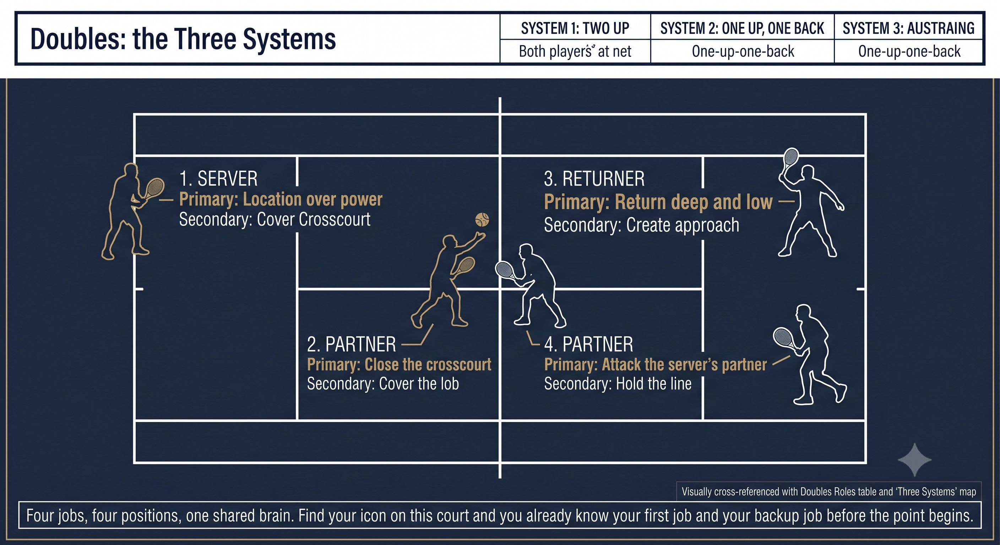

Chapter 27: Singles Patterns and Doubles Systems
(English version of Chapter 27 in the United Tennis Handbook)
CHAPTER 27

Figure 1
SINGLES PATTERNS & DOUBLES SYSTEMS
Strategy
Patterns are repeatable sequences. Systems are coordinated team behaviors. Both beat raw talent.
Singles: the Five Core Patterns
Tennis isn't random. It's five patterns, repeated a hundred times. Master the patterns and you master the match.
— Henry Pham
Every singles point follows one of these patterns. Recognize it, execute it, repeat it.
Figure 27.1: Five patterns, a hundred points each. Pattern 1 and 2 alone are 80% of pro tennis. Memorize the table, recognize the pattern, execute the sequence.

Figure 2
RULE: Pattern 1 (Serve+1 forehand) and Pattern 2 (Return+1 neutralize) make up 80% of pro tennis. Master these first.
Serve+1 Patterns: the Weapon
Figure 27.2: S+1 is a two-shot sequence, not one shot. The bold arrow is the serve, the light arrow is the forehand follow-up — they point to the same target zone.

Figure 3
Coach's Tip
S+1 doesn't mean "hit a forehand." S+1 means "hit a forehand to a target that sets up the next shot." Wide serve, then inside-out to the open court, then the next ball is a down-the-line put-away. It's a two-shot sequence.
Return+1 Patterns: the Neutralizer
RULE: The return goal is to make the server hit a groundstroke. No aces, no S+1 winners. Deep crosscourt is the highest-percentage choice.
Rally Patterns: Control the Center
Whoever controls the center of the court — the "T" zone — wins the rally.
Doubles: the Three Systems
Doubles isn't two singles matches. It's a system. Two people, one brain.
— Henry Pham
Three systems cover 95% of doubles. Pick one, drill it, trust it.
Figure 27.3: Three systems, ninety-five percent of doubles. Two up kills baseliners. One up one back lets the net player hunt. Two back is the defensive fallback.

Figure 4
Doubles Roles and Responsibilities
Figure 27.4: Four jobs, four positions, one shared brain. Find your icon on this court and you already know your first job and your backup job before the point begins.

Figure 5
RULE: The net player moves on the server's toss, not on contact. Early movement means a successful poach. Late movement makes you the target.
Doubles Patterns
Communication: the Three Signals
Figure 27.5: Three hand shapes, two words. Give the signal before every serve, or your partner is guessing instead of moving with you.

Figure 6
Fault Signals — Strategy
Figure 27.6: Six errors, two formats, one shared lesson: most strategic errors aren't technique failures — they're a shot hit on instinct instead of on the plan.
Strategy Checklist
SINGLES: S+1 FOREHAND. R+1 DEEP. CROSSCOURT DEFAULT. ATTACK SHORT. RECOVER TO THE BISECTOR.
DOUBLES: SERVE PERCENTAGE. POACH EARLY. RETURN LOW CROSSCOURT. COMMUNICATE. CONTROL THE NET.
– Singles: the serve+1 forehand pattern is drilled until automatic.
– Singles: return+1 deep crosscourt neutralizes 80% of serves.
– Singles: crosscourt deep is the default. Down the line only on a green light (short, high, or weak).
– Singles: recover to the bisector of the opponent's possible replies.
– Doubles: serve percentage first. A wide serve is the partner's poach signal.
– Doubles: the net player moves on the toss, not on contact.
– Doubles: return low, crosscourt. Never miss wide.
– Doubles: communicate — poach, stay, fake, switch, mine, yours.
– Doubles: control the net means control the match. The first team to net wins 65 to 70% of points.
Where This Leads
This chapter covers singles-patterns and doubles-systems strategy. Chapter 28 covers the mental game: the pre-point routine, Quiet Eye, and pressure. Chapter 29 covers the physical game: tennis-specific fitness and periodization. Chapter 30 is the unified Q-V-ROOT-8-45-Impulse quick reference card.